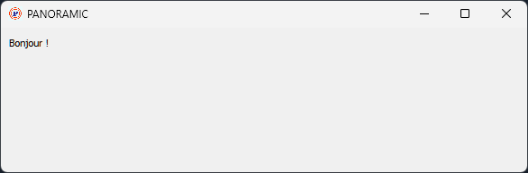
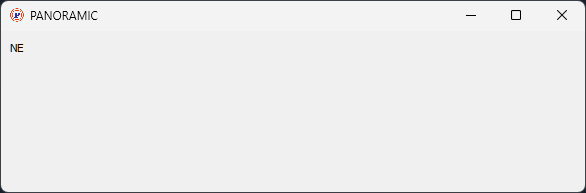
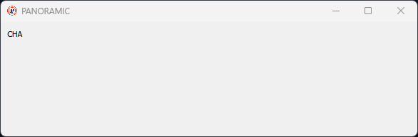
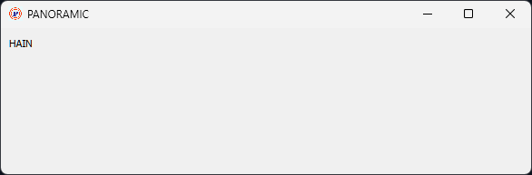
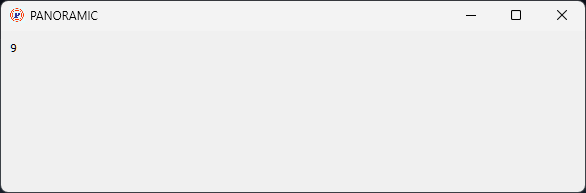
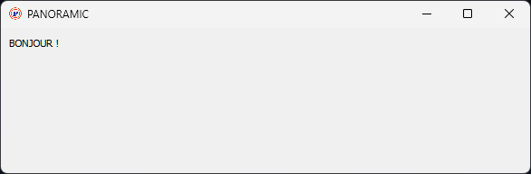
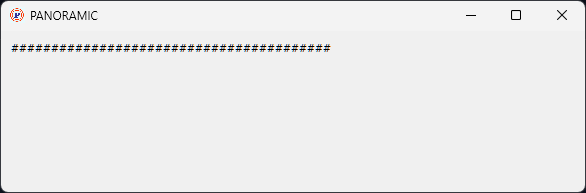
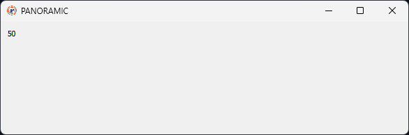
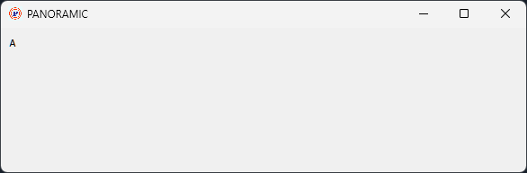

PANORAMIC : MANIPULER LES STRINGS
Sommaire
Le BASIC et les chaînes de caractères : 2 choses à savoir
Les fonctions qui extraient quelques caractères d'une chaîne de caractères
La fonction qui compte le nombre de caractères d'une chaîne de caractères
Les fonctions qui mettent une chaîne de caractères en majuscule ou en nimuscule
Les fonctions qui retirent les blancs à droite ou à gauche d'une chaîne de caractères
Les fonctions qui créent une chaîne de caractères
Qu'est-ce qu'un "string"?
String est le terme anglais pour désigner une chaîne de caractères, c'est à dire un texte de quelques mots.
Le BASIC et les chaînes de caractères : 2 choses à savoir
Il y a deux choses essentielles à savoir pour manipuler les chaînes de caractères en BASIC :
1 - Une chaine de caractères doit TOUJOURS être délimitées par des guillemets.
"Boujour" est une chaîne de caractères compréhensible par le langage BASIC.
Si on exécute le source suivant :
print "Bonjour !" : rem on affiche le texte à l'écranOn obtient comme résultat :

2 - Toute variable qui contient une chaîne de caractères ou toute fonction qui retourne une chaîne de caractères (donc, qui se présente, au niveau sémantique comme une chaîne de caractères) se termine par le caractère DOLLAR.
Si on exécute le source suivant :
a$ = "Bonjour !" : rem on affecte la variable avec une chaîne de caractères
print a$ : rem on affiche le contenu de a$Le résultat est exactement le même (la différence c'est qu'on imprime le contenu d'une variable au lieu du texte lui-même) :
Les fonctions qui extraient quelques caractères d'une chaîne de caractères
Rappel: toute fonction qui retourne une chaîne de caractère se termine par DOLLAR.
Les fonctions qui extraient des caractères d'une chaîne de caractères sont:
RIGHT$
LEFT$
MID$
Extraction de la partie DROITE d'une chaîne de caractères : RIGHT$
La fonction RIGHT$(A$, N) extrait les N caractères à droite de la chaîne de caractères contenue dans A$.
Cet exemple:
print right$("CHAINE",2) : rem on affiche les 2 caractères à droitedonne comme résultat :

Extraction de la partie GAUCHE d'une chaîne de caractères : LEFT$
La fonction LEFT$(A$, N) extrait les N caractères à gauche de la chaîne de caractères contenue dans A$.
Cet exemple:
print left$("CHAINE",3) : rem on affiche les 3 caractères à gauchedonne comme résultat :

Extraction d'une partie d'une chaîne de caractères : MID$
La fonction MID$(A$, P, N) extrait les N caractères à partir de la position P de la chaîne de caractères contenue dans A$.
Cet exemple:
print mid$("CHAINE",2,4) : rem on affiche 4 caractères à partir du 2èmedonne comme résultat :

La fonction qui compte le nombre de caractères d'une chaîne de caractères : LEN
Comme cette fonction retourne un nombre et non pas une une chaîne de caractère, elle ne se termine pas par DOLLAR !
La fonction LEN(A$) retourne le nombre de caractères de la chaîne contenue dans A$.
Cet exemple:
print len("Bonjour !")donne comme résultat :

car Bonjour ! contient bien 9 caractères : le blanc entre le r et le point d'exclamation est un caractère.
Les fonctions qui mettent une chaîne de caractères en majuscule ou en minuscule
Les fonctions qui mettent une chaîne de caractère en majuscule ou en minuscule sont :
UPPER$
LOWER$
Mise en majuscule d'une chaîne de caractères : UPPER$
La fonction UPPER$(A$) retourne en majuscule la chaîne de caractères qui est contenue dans A$.
Cet exemple:
print upper$("Bonjour !")donne comme résultat :

Mise en minuscule d'une chaîne de caractères : LOWER$
La fonction LOWER$(A$) retourne en minuscule la chaîne de caractères qui est contenue dans A$.
Cet exemple:
print lower$("BONjour !")donne comme résultat :
Les fonctions qui retirent des blancs à droite ou à gauche d'une chaîne de caractères
Les fonctions qui retirent des blancs à droite ou à gauche d'une chaîne de caractère sont :
RTRIM$
LTRIM$
TRIM$
Retirer les blancs à DROITE d'une chaîne de caractères : RTRIM$
La fonction RTRIM$(A$) retourne une chaîne de caractères qui est la chaîne contenue dans A$ sans les blancs à droite.
Cet exemple:
dim a$
a$ = rtrim$("Bonjour ! ")met dans a$ la chaîne de caractères "Bonjour !" (sans blanc à droite)
Retirer les blancs à GAUCHE d'une chaîne de caractères : LTRIM$
La fonction LTRIM$(A$) retourne une chaîne de caractères qui est la chaîne contenue dans A$ sans les blancs à gauche.
Cet exemple:
dim a$
a$ = ltrim$(" Bonjour !")met dans a$ la chaîne de caractères "Bonjour !" (sans blanc à gauche)
Retirer les blancs à DROITE et à GAUCHE d'une chaîne de caractères : TRIM$
La fonction TRIM$(A$) retourne une chaîne de caractères qui est la chaîne contenue dans A$ sans les blancs à droite et à gauche.
Cet exemple:
dim a$
a$ = trim$(" Bonjour ! ")met dans a$ la chaîne de caractères "Bonjour !" (sans blanc ni à droite ni à gauche)
Les fonctions qui créent une chaîne de caractères
Les fonctions qui créent une chaîne de caractère sont :
STRING$
STR$
CHR$
Créer une chaîne de caractères composée de N caractères identiques : STRING$
La fonction STRING$(10,"A") retourne une chaîne de caractères composée de 10 fois le caractère "A".
Cet exemple:
print string$(40,"#")donne comme résultat :

Transformer un nombre en chaîne de caractères : STR$
La fonction STR$(A) retourne une chaîne de caractères correspondant au nombre contenu dans la variable A.
Cet exemple:
dim a
a = 20 + 30
print str$(a)donne comme résultat :

Obtenir un caractère dont on connait le code ASCII : CHR$
La fonction CHR$(N) retourne un caractère correspondant au code ASCII N.
Cet exemple:
print chr$(65)donne comme résultat :

car 65 est le code ASCII de A